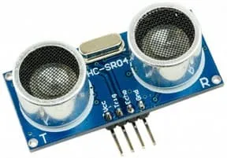
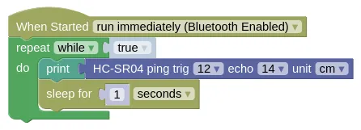

Ultrasonic Distance (HC-SR04)

The HC-SR04 Ultrasonic Distance Sensor works by sending a pulse of sound and measuring how long it takes for the echo to return.

Features of this sensor includes...
- Max Range: 400cm
- Detects in a cone
- Cannot detect small objects far from the sensor-
- Multiple sensors may interfere with each other
Pins
| Pin | Purpose |
|---|---|
| VCC | Provides the ultrasonic with power. Connect to VIN on the ESP32. |
| GND | Provides the ultrasonic with power. Connect to GND on the ESP32. |
| TRIG | Triggers the start of a distance measurement. Connect to any output capable pin. |
| ECHO | Provides the return signal for distance measurement. Connect to any IO pin. |
Wiring
In this example, we are using Pin 12 for TRIG and Pin 14 for ECHO. If you use different pins, change your code accordingly.
Code
This code will change the servo angle from 0 to 180 degrees and back.
Blocks

Python
import time
from ioty import pin
while True:
print(pin.hc_sr04_ping_cm(12, 14))
time.sleep(1)
Results
You should see a distance in cm printed in the monitor. If you place an object in front of the ultrasonic, you should see the distance change.